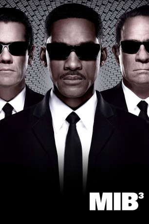

 
 IMDB-Wertung: 6.8 / 10
IMDB-Wertung: 6.8 / 10  Metascore:
Metascore: 
Die Vergangenheit droht Agent K einzuholen. Denn vor mittlerweile 40 Jahren hat er den gefährlichen Alien-Verbrecher Boris verhaftet, wobei dieser seinen Arm verlor. Seitdem sitzt Boris in einem geheimen Gefängnis am Mond und sinnt auf Rache. Doch mit Hilfe der hübschen Lilly gelingt Boris die Flucht und er macht sich rasch auf die Jagd nach K. Doch er will ihn nicht etwa einfach töten, sondern in die Vergangenheit reisen, K umbringen und gleichzeitig seinen Arm retten. Da K plötzlich wie vom Erdboden verschwunden ist und sich nur sein Partner Agent J an ihn erinnern kann scheint das unterfangen auch gelungen zu sein - doch J lässt das natürlich nicht auf sich sitzen, reist ebenfalls in die Vergangenheit und arbeitet mit dem jungen K zusammen um Boris aufzuhalten...
Jahr: 2012
Dauer: 106 Minuten
FSK: 12
Land: USA Studio: Columbia PicturesTonspuren: DTS - ,
Untertitel:
Auflösung: 1080p (1920x1040) Größe: 7383 MB
Genre: Action, Sci-Fi, Komödie
Regisseur:  Barry Sonnenfeld
Barry Sonnenfeld
Drehbuch: Etan Cohen, Lowell Cunningham
Soundtrack: Danny Elfman
Darsteller:
 Will Smith als Agent J
Will Smith als Agent J Tommy Lee Jones als Agent K
Tommy Lee Jones als Agent K Josh Brolin als Young Agent K
Josh Brolin als Young Agent K Jemaine Clement als Boris The Animal
Jemaine Clement als Boris The Animal Emma Thompson als Agent O
Emma Thompson als Agent O Michael Stuhlbarg als Griffin
Michael Stuhlbarg als Griffin Mike Colter als Colonel
Mike Colter als Colonel Michael Chernus als Jeffrey Price
Michael Chernus als Jeffrey Price Alice Eve als Young Agent O
Alice Eve als Young Agent O David Rasche als Agent X
David Rasche als Agent X Keone Young als Mr. Wu
Keone Young als Mr. Wu Bill Hader als Andy Warhol
Bill Hader als Andy Warhol Jack O'Connell als 1969 MIB HQ Guard
Jack O'Connell als 1969 MIB HQ Guard Tobias Segal als 1969 MIB Agent #1
Tobias Segal als 1969 MIB Agent #1 Chloe Sonnenfeld als Coney Island Flower Child
Chloe Sonnenfeld als Coney Island Flower Child Rick Baker als Brain Alien
Rick Baker als Brain Alien Ian Blackman als Car Theft Victim
Ian Blackman als Car Theft Victim Ken Arnold als Buzz Aldrin
Ken Arnold als Buzz Aldrin David Pittu als Roman The Fabulist
David Pittu als Roman The Fabulist Lenny Venito als Bowling Ball Head
Lenny Venito als Bowling Ball Head James Martin Kelly als 1969 NYPD Cop #1
James Martin Kelly als 1969 NYPD Cop #1 Barry Sonnenfeld als Husband Watching Launch
Barry Sonnenfeld als Husband Watching Launch Will Arnett als Agent AA , uncredited
Will Arnett als Agent AA , uncreditedDatei: X:\4-Tetralogie(M-Z)\Men in Black\Men in Black 3 (2012, FSK12, 1920x1040) 3D.mkv seit 06.08.2015
Festplatte: HD Collection-3(N-Z)-6(A-Z)
 Es gibt insgesamt 8 Filme in der Gruppe '4-Tetralogie(M-Z)\Men in Black'
Es gibt insgesamt 8 Filme in der Gruppe '4-Tetralogie(M-Z)\Men in Black'